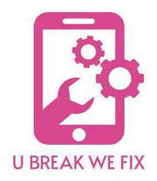

Trade Mark Journal No.2025/011 14 March 2025
UK00004141671 27 December 2024 (9,35,37,42)

- Class 9
- LCD projectors; LCD monitors; LCD panels; LCD large-screen displays; Projector screens; Smartphone screen magnifiers; Display screen filters; LCD [liquid crystal display] projectors; Liquid crystal display (LCD) televisions; Liquid crystal display [LCD] monitors; LCD [Liquid Crystal Display] monitors; Filter screens for computer screens; Computer screen filters; Display screens; Screens; Display screen filters adapted for use with televisions; Flat panel electroluminescent display screens; Anti-glare screens; Display screen filters adapted for use with computer monitors; Monitor screens; Screen savers; Display screen filters adapted for use with tablet computers; Computer screens; Large-screen LCDs; Screen filters for computers and televisions; LCD [liquid crystal display]; Telephone sets with screen and keyboard; Mobile phone display screen protectors in the nature of films; LED screen displays; Plasma display panel (PDP) televisions; Video display screens; Interactive touch screen terminals; Touch screen pens; Display screen protectors in the nature of films for mobile phones; Touch screens; Mobile phone screen protectors; Tempered glass screen protectors for smartphones; Computer screen saver software; Expandable screen smartphones; Capacitive styluses for touch screen devices; Screen protectors for cell phones; Touchscreen monitors; Brackets for setting up flat screen TV sets; Projection screens; Anti-glare filters for televisions and computer monitors; Film screens; Visual display screens; Liquid crystal display screens; Liquid crystal displays [LCDs] for home theaters; Screen protectors for mobile telephones; Downloadable screen savers for phones; Video screens; TV monitors; Filters for television screens; Downloadable screen savers for computers; Computer display monitors; Screens [photography]; LCDs [liquid crystal displays]; Fluorescent screens; Holographic screens; Optical filters for plasma display panel; OLED displays; Optical viewing screens; Interactive graphics screens; Motion picture screens; Anti-glare filters for computer monitors; Screens for photoengraving; Optical filters for plasma display panels; Flat panel displays; Projection screens for movie films; Display serial interfaces [DSI]; Computer touchscreens; Display monitors; Flexible flat panel displays for computers; Tablet monitors; Pens with conductive point for touch screen devices; Computer screen saver software, recorded or downloadable; Protective films adapted for computer screens; TV cameras; Touchscreen sensors; Anti-glare filters for televisions; Computer monitor frames; Optical filters for screens; Electroluminescent display panels; Computer keypads; Wearable video display monitors; Intensifying screens for x-ray films; OLED (Organic light emitting diode) display panels; Television display apparatus; Plasma display apparatus; Electronic display panels; Battery chargers; Battery cables; Smartphone battery chargers; Batteries; Battery terminals; Battery packs; Battery adapters; Solar battery chargers; Electric battery chargers; Battery charge devices; Wireless battery chargers; Solar-powered battery chargers; Battery charging equipment; Battery separators; Battery starters; Rechargeable batteries; Dry-cell batteries; Battery preheaters; Lithium batteries; Battery testers; Battery compensation chargers; Battery boxes; Battery chargers for use with telephones; Anode batteries; Cell phone battery chargers; Battery cases; Chargers for batteries; Battery leads; Mobile phone battery chargers; Galvanic batteries; Battery booster cables; Rechargeable electric batteries; Battery chargers for laptop computers; Battery charging devices for motor vehicles; Cell phone battery chargers for use in vehicles; Battery chargers for tablet computers; Electrical batteries; Battery chargers for electronic cigarettes; Nickel-cadmium storage batteries; Battery chargers for mobile phones; Solar-powered rechargeable batteries; Batteries, electric; Electric batteries; Chargers for electric batteries; Solar batteries; Terminals for batteries; Batteries for phones; Power packs [batteries]; Battery testing apparatus; Electric storage batteries; Lithium ion batteries; Chargeable batteries; Electrical storage batteries; Accumulators [batteries]; Electrical cells and batteries; Dry batteries; Batteries for lighting; Portable power supplies (rechargeable batteries); Batteries for vehicles; Power units [batteries]; Uninterruptible power supply apparatus [battery]; Batteries for pocketlamps; Batteries for projectors; Batteries for mobile phones; Plates for batteries; Battery chargers for home video game machines; Car charger; Electronic cigarette batteries; Mobile telephone batteries; Solar batteries for domestic use; Charging appliances for rechargeable equipment; Batteries for electronic cigarettes; Batteries for use with mobile telecommunication devices; Rechargeable cells; Electric charging cables; High tension batteries; Chargers for cell phone; Chargers for electrical accumulators; Portable power chargers; Rechargers for electric accumulators; Batteries for electronic smokers' articles; Chargers for electric accumulators; Chargers; Wireless charging pads for smartphones; Chargers for smartphones; Mobile phone chargers; Wireless chargers; Power adapters for use in vehicle lighter sockets; Mains chargers; Adapter cables (Electric -); Electric adapter cables; Chargers for mobile phones; Chargers for mobile telephones; Mobile phones; Devices for hands-free use of mobile phones; Straps for mobile telephones; Mobile phone connectors for vehicles; Fast chargers for mobile devices; Software for mobile phones; Mobile telephones; Earphones for use with mobile telecommunication devices; Lanyards for mobile telephones; Auxiliary batteries for mobile phones; Keyboards for mobile phones; Mobile phone straps; Mobile telecommunications handsets; Mobile telephones for use in vehicles; Wireless headsets for mobile phones; Downloadable mobile applications for use with wearable computer devices; Headsets for mobile telephones; Displays for mobile phones; Mobile radios; Downloadable applications for use with mobile devices; Downloadable applications for mobile devices; Mobile apps; Dashboard mounts for mobile phones; Cases for mobile phones; Electronic game software for mobile phones; Downloadable graphics for mobile phones; Display modules for mobile phones; Wireless portable printers for use with laptops and mobile devices; Mobile computers; Downloadable software applications for mobile phones; Downloadable graphics for mobile telephones; Application software for mobile phones; Wireless headsets for use with mobile telephones; Leather cases for mobile phones; Holders adapted for mobile telephones and smartphones; Software applications for use with mobile devices; Software applications for mobile devices; Software and applications for mobile devices; Mobile software; Computer software for mobile phones; Protective cases for mobile phones; Mobile phone cases; Mobile phone covers; Application software for mobile devices; Carriers adapted for mobile phones; Holders adapted for mobile phones; Mobile phone speakers; Dustproof plugs for jacks of mobile phones; Carrying cases for mobile phones; Docking stations for mobile phones; Computer application software for mobile phones; Cases adapted for mobile phones; Downloadable mobile applications; Computer software for use on handheld mobile digital electronic devices and other consumer electronics; Downloadable ring tones for mobile phones; Stands adapted for mobile phones; Ring holders for mobile telephones; Mobile telephone covers; Computer application software for mobile telephones; Mobile telecommunications apparatus; Computer game software for use on mobile and cellular phones; Carrying cases for mobile telephones; Mobile telecommunication apparatus; Downloadable ring tones for mobile telephones; Computer software for mobile applications that enable interaction and interface between vehicles and mobile devices; Mobile telephone cases; Educational mobile applications; Remote controls for mobile electronic devices; Mobile phone docking stations; Selfie sticks used as smartphone accessories; Augmented reality software for use in mobile devices; Mobile or portable fax machines; Mobile phone ring holders; Flip covers for mobile phones; Computer game software for use on mobile devices; Downloadable mobile applications for booking taxis; Downloadable mobile coupons; Carrying cases for mobile computers; Straps for mobile phones; Braille mobile phones; Mobile phone ring stands; Software for mobile device management; Mobile device management software; Dashboard mats adapted for holding mobile telephones and smartphones; Downloadable ringtones for mobile phones; Mobile communication terminals; Mobile application software; Ring stands for mobile telephones; Protective covers for cell phones; Digital cellular phones; Mobile data receivers; Dashboard mats adapted for holding cell phones and smartphones; Laptop bags; Laptop computers; Cooling pads for laptop computers; Laptop covers; Laptop cases; Laptop sleeves; Laptops [computers]; Notebook computers; Netbook computers; Adjustable desktop mounts for tablet computers; 2-in-1 laptops; Convertible laptops; Wireless headsets for tablet computers; Notebook computer carrying cases; Leather cases for tablet computers; Laptop carrying cases; Wireless computer peripherals; Notebook computer cooling pads; Computer peripherals; Sleeves for laptops; Protective covers for tablet computers; Computer cables; Adapter cables for headphones; Computers and computer hardware; Notebook PCs; Desktop computers; Bags adapted for laptops; Covers for computer keyboards; Computer mousepads; Tablet computers; Computer motherboards; Parts and fittings for computers; Protective cases for tablet computers; Downloadable wallpapers for computers and phones; USB chargers for electronic cigarettes; USB cables for cellphones; Portable computers; Headsets for use with computers; Firmware for computer peripherals; Tablet computer cases; Monitors [computer hardware]; Portable chargers; All-in-one computers; Software for tablet computers; Cases for tablet computers; Tablet computer; Computer hardware; Hardware (Computer -); Cases adapted for netbook computers; Computer keyboards; Protective films for tablet computers; Computer styluses; Computer peripheral equipment; Laptop docking stations; Cases adapted for notebook computers; Jackets for computer disks; Wristband computer devices; Protective cases for laptops; Stands for computer equipment; Peripheral equipment for computers; USB chargers; Wearable computer peripheral devices; Mounting racks for computer hardware; Computer components and parts; Cooling pads for wireless computers; Components for computers.
- Class 35
- Retail services in relation to mobile phones; Advertisement via mobile phone networks.
- Class 37
- Repair of computers; Computer installation and repair; Repair of damaged computers; Repair of computer hardware; Maintenance and repair of computer hardware; Computer repair services; Repair or maintenance of computers; Maintenance and repair of computers; Installation and repair of computer hardware; Installation, repair and maintenance of computers and computer peripherals; Maintenance and repair of computers [hardware]; Computer hardware (Installation, maintenance and repair of -); Installation, maintenance and repair of computer hardware; Maintenance and repair of computer networks; Camera repair; Repair and maintenance of computer and telecommunications hardware; Repair and maintenance of smartphones; Repair of cameras; Computer hardware and telecommunication apparatus installation, maintenance and repair; Consultancy relating to the installation, maintenance and repair of computer hardware; Repair of office machines; Office machine and equipment installation, maintenance and repair; Repair of watches; Clock repair; Film projector repair and maintenance; Maintenance and repair of telephones; Watch repair or maintenance; Machinery repair; Maintenance and repair of watches; Watch repair; Repair of electronic business equipment; Clock repair or maintenance; Repair of electrical equipment; Telephone repair; Telephone installation and repair; Television repair; Repair of tools; Electric appliance repair.
- Class 42
- Maintenance and repair of software; Unlocking of mobile phones; Installation, maintenance, repair and servicing of computer software; Installation, repair and maintenance of computer software; Installation, maintenance and repair of computer software; Repair of computer software; Unlocking of mobile telephones; Repair of damaged computer programs; Installation, maintenance and repair of software for computer systems; Computer software maintenance; Computer software (Maintenance of -); Maintenance of computer software; Computer and computer software rental; Computer programming and maintenance of computer programs; Computer software installation and maintenance; Rental and maintenance of computer software; Installation and maintenance of computer software; Maintenance of computer programs; Upgrading and maintenance of computer software; Computer software installation; Computer software (Installation of -); Installation of computer software; Services for maintenance of computer software; Rental of computer hardware; Computer hardware rental; Software (Rental of computer -).
TECH11 LIMITED